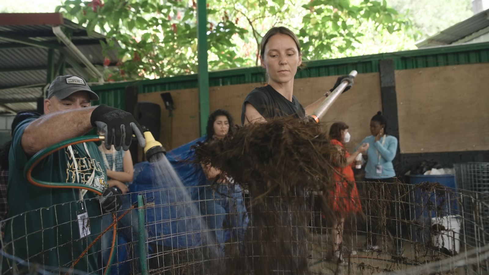
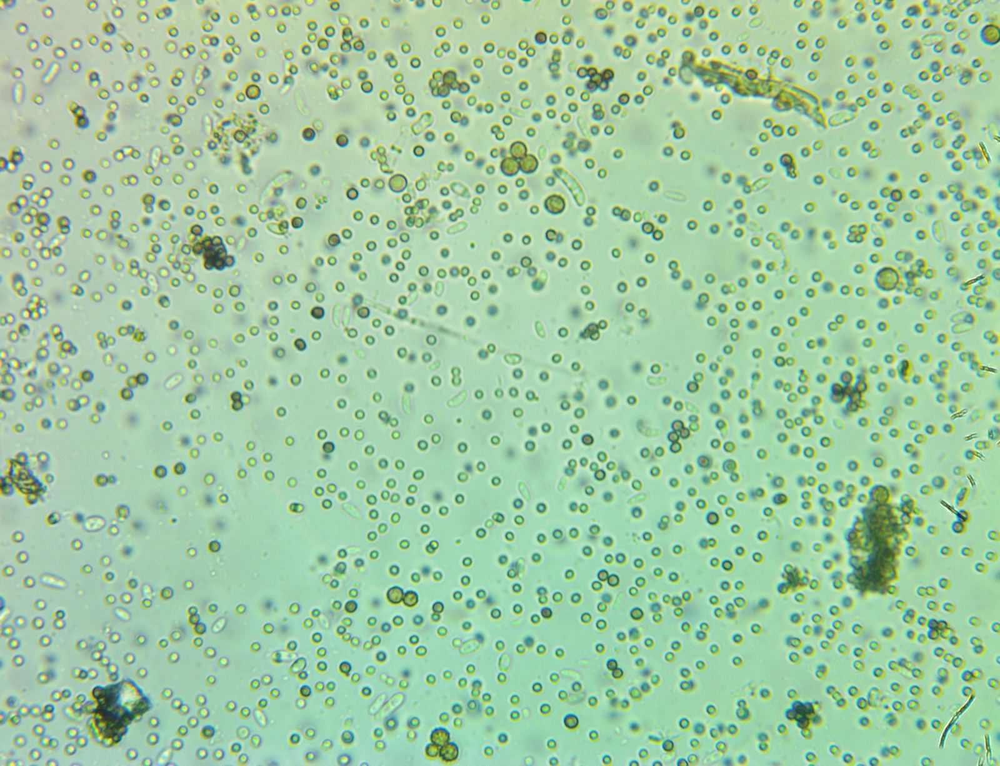
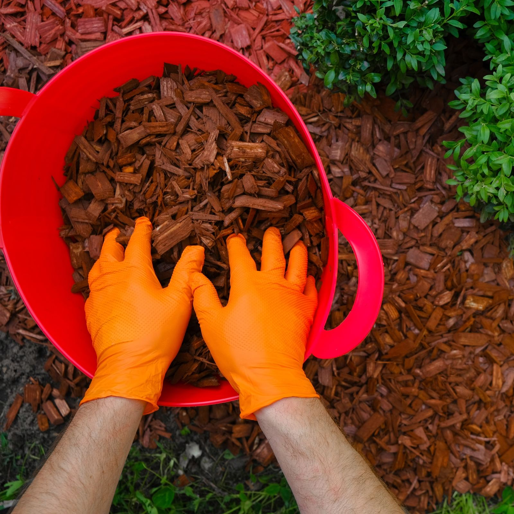
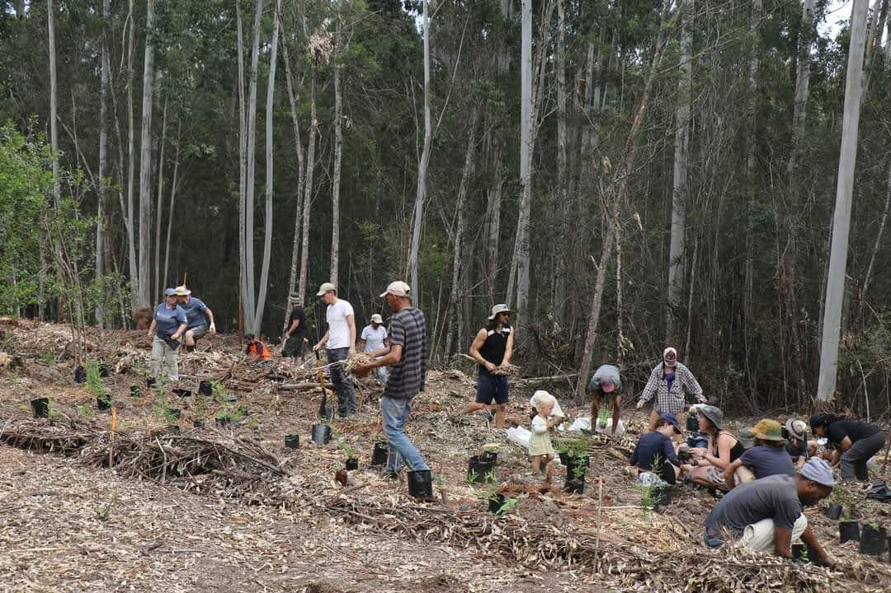
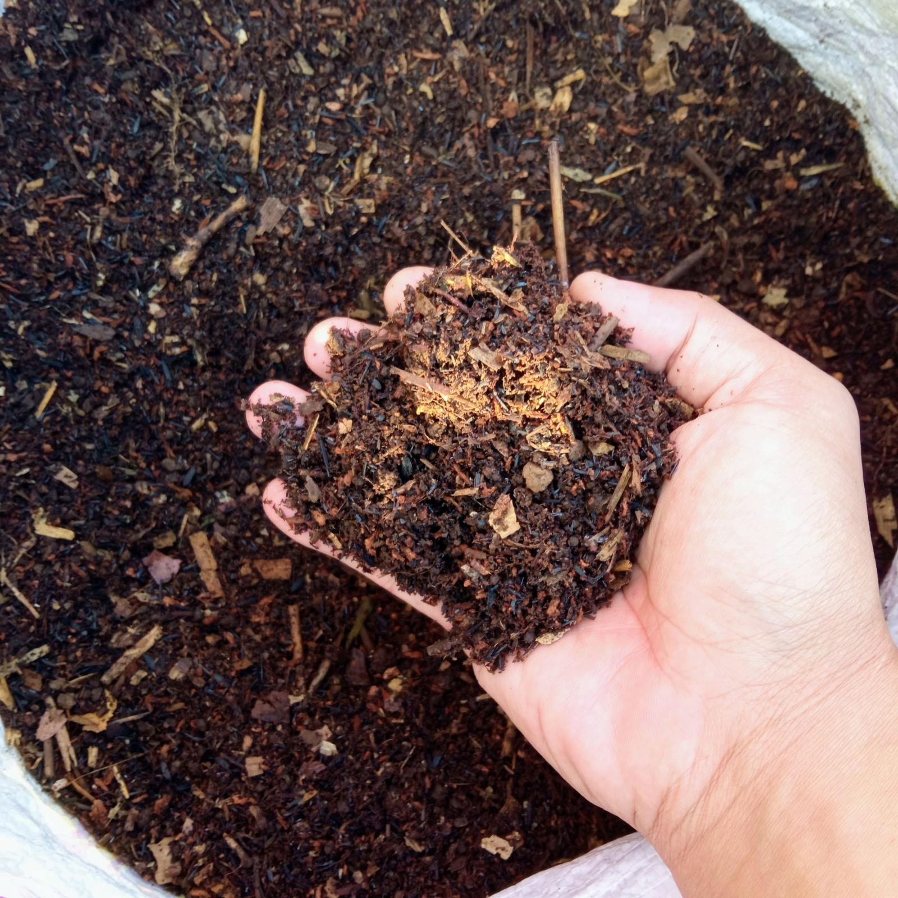
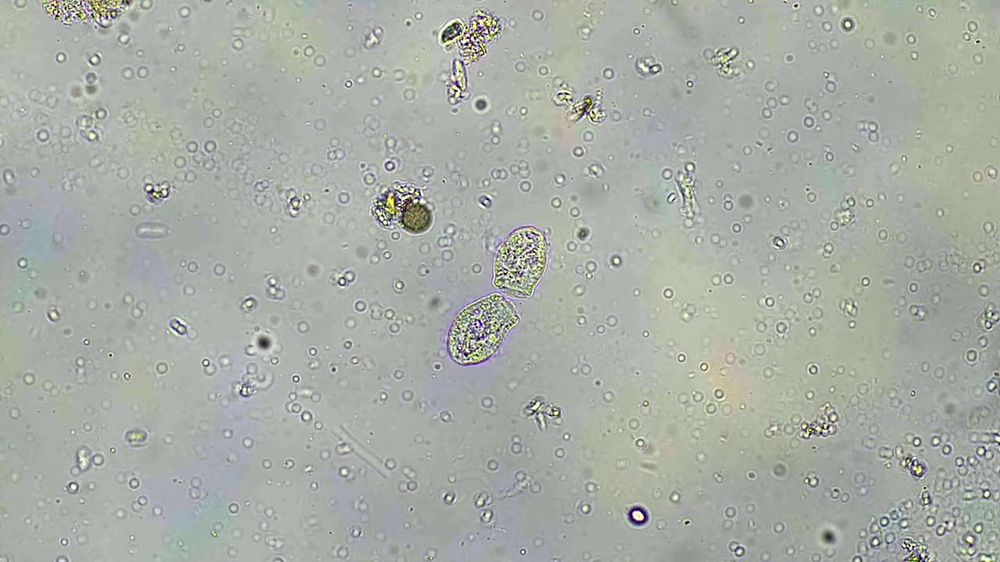

Volunteer
Volunteer with us
Soil regenerators are building living soil in more than a hundred countries. Bring your hands, your skills, or a few hours a month, and join the people growing this network.
Sign up to volunteer See the ways to help
Community reach, Soil Food Web Foundation, 2026





These five are stand-ins pulled from the Foundation’s own image library so the hero is not five empty boxes. None of them shows a volunteer doing volunteer work, which is what this collage is for. Replace with visuals 4 and 8 from docs/volunteer-visuals.md, and write the five captions. Foundation to supply.
Why this needs volunteers
More than half of our students live in the United States. The growers with the most to gain from living soil mostly live somewhere else.
Closing that gap takes people on the ground. Someone who speaks the language, knows the local crops, and can show a neighbour what a compost pile does to a tired field.
That is what volunteers do here. You carry the science into places a course alone cannot reach, and you make this a community that belongs to everyone in it.
Foundation enrolment records, 2026
The proportion of students in the United States is not yet verified against enrolment records. Confirm the figure, or change the sentence, before this page is published. Evan.

Start in the next ten minutes
You can help today, before anyone writes back.
-
About 5 minutes
Watch the soil food web animation
Then send it to one grower or gardener who has never heard of it.
-
About 2 minutes
Share a free webinar
Pick a recording and post it in a group where growers talk: a farm co-op, a garden club, a WhatsApp group.
-
About 5 minutes
Show us your soil
Post a photo of your compost, your soil, or your roots and tag us on Instagram. We share the best ones.
The mockup pointed the animation link at nothing. It goes to the science page, which carries the animations. Confirm this is the animation meant, or give the exact URL. Evan.
Pick the way you want to help
Every role here comes from a real need at the Foundation. Choose one, or tell us about something we haven’t thought of.
How much time do you have?
-
Host a compost day
Open your farm, garden, or school plot for a hands-on build. We send the guide and help you promote it.
-
Share your microscope
Trained in the Foundation courses? Help local growers read their soil at meetups or over video.
-
Translate the science
One course now has Spanish subtitles. Help us bring the rest into Spanish, Portuguese, Hindi, Telugu, Swahili, and more, or review translations for accuracy.
-
Run a local meetup
Gather growers near you to share compost results and questions. We send a starter guide and a direct line to staff.
-
Document the work
Photograph and film workshops and field results. Your footage feeds our courses and social channels.
-
Lend professional skills
Design, web, grant writing, data, legal, accounting. Small nonprofits run on generous experts.
-
Collect field data
Record soil samples, plant health, and yields on trial sites so results can be published openly.
-
Welcome new students
Alumni can answer first questions, join study calls, and help newcomers find their footing in the courses.
-
Staff an event table
Represent the Foundation at farmers markets, garden shows, and conferences near you. We ship the materials.
-
Write and research
Draft blog posts, fact-check claims against their sources, and summarise new soil biology papers.
-
Host a fundraiser
Run a dinner, open garden day, or online campaign that funds scholarships for growers who can’t pay.
-
Something else
Have an idea or a skill we haven’t listed? Tell us in the form and we’ll find a way to use it.
What collecting data looks like
Field volunteers keep a notebook and a sheet per site. The sheets are what turn one grower’s season into something another grower can read.
Notebook and data-sheet scans, and the sentence above, both need Evan. The two sentences here are written from the role card and are a draft, not approved copy.
Grow deeper with us
Most volunteers start with one small task. Some keep going. Here is the path, from the surface down.
1
First task
SurfaceShare a webinar, film one workshop, translate one page. You see what the work is like, with no commitment.
2
Regular role
TopsoilPick a role from the list above and give a few hours a month. You join the volunteer channel and hear about openings first.
3
Lead a project
SubsoilRun a translation, organise a meetup series, or coordinate an event. You work directly with Foundation staff.
4
Train new volunteers
Deep rootsWelcome and guide the people who join after you, and help shape how the volunteer programme grows.
Visual 2 and visual 3: the drawn root becomes a flatbed scan of a real root system, and each layer takes the texture of the matching band of a real soil core. Briefs in docs/volunteer-visuals.md.
Open right now
Every opportunity carries a date, so you know it is current.
- DateOpeningKind
-
Review Spanish subtitles for the Foundation Courses
Native Spanish speakers, remote, about 6 hours total.
Translation. Volunteer
-
Film the compost workshop in New Mexico
Two days on site. Footage goes into the course library and social channels.
Photo and video. Volunteer
-
Ongoing
Share microscope footage with the community
Film what lives in your compost. The best clips become Shorts on our channel.
Microscopy. Volunteer
All three openings are placeholders from the mockup: the dates, the places and the hours are invented and must not be published. Replace with real openings, or take the section down until there are some. This list can be fed from the same dated index the calendar page uses. Evan.
From the people doing it
Volunteers in their own words.
I came for one compost workshop. Two years later I run the monthly meetup, and six farms in our valley have stopped buying fertilizer.
Seeing nematodes move under the lens for the first time changed how I look at a handful of dirt.
My grandmother farmed this land. Now the course is in her language too.
All three quotes, all three attributions and all three portraits are placeholders written for the mockup. Nobody said these words. Replace with real quotes, gathered with permission, or cut the section. Evan and Stephanie.
Volunteer as a team
For companies, schools, and employee groups in the United States.
Plan a team day
Bring your team to build a compost pile, help on a trial site, or take on a remote project together, such as translation or data entry. Tell us your group size, location, and preferred dates, and we will propose a day that fits.
The mockup pointed this at /contact?topic=team-volunteering. The contact page has no topic parameter, so the button goes to the contact page itself. Add the topic to the contact form, or leave it as it is. Evan.
Your hours can become a donation
Many US employers run volunteer grant programmes, sometimes called Dollars for Doers. When you volunteer with a qualifying 501(c)(3), your company may donate to that charity based on your hours. Ask your HR or giving team whether your employer offers one.
Soil Food Web Foundation is a 501(c)(3) public charity, EIN 39-4439236. Use our EIN to find us in your company’s giving portal. We confirm your hours when your employer asks.
Tax note: IRS rules treat the value of volunteer time as non-deductible. Some unreimbursed costs, such as mileage to a volunteer site, may be deductible. See IRS Publication 526 or ask a tax adviser.
Two claims to confirm before publishing: that the Foundation will confirm volunteer hours to an employer on request, and who does it. The tax note is general and is not tax advice. Legal review. Evan.
Questions people ask first
Do I need a science background?
No. Many roles need hands, a camera, a language, or a professional skill. Microscope roles ask for some training, and the Foundation Courses cover it.
Do I have to be a student at the School?
No. Students and alumni are welcome, and so is anyone who cares about living soil.
Can I volunteer from home?
Yes. Translation, design, writing, grant work, and data roles are fully remote.
I have land. Can I host something?
Yes. Farms, market gardens, school plots, and community gardens all make good sites for a compost day. Tell us about your land in the form.
Is volunteering paid?
Volunteer roles are unpaid. Regular volunteers get a starter guide for their role and direct contact with staff.
Give money instead Invite us to speak Find a professional
All five answers are drafts written for the mockup. Evan to confirm each one, in particular the starter guide and the direct contact promised in the last answer.
Join the volunteer network
Tell us who you are and where you are. A real person reads every message.
1
You send the form
Takes about two minutes.
2
We reply within a week
A volunteer coordinator reads your skills and region.
3
We match you
With a remote project, a local meetup, or an upcoming event.
4
You start
With a short welcome call and a starter guide for your role.
Watch the network at work
Fresh from the field: compost builds, microscope finds, and before and after results shared by the community.
On Instagram
Follow on Instagram
Shorts on YouTube
Subscribe on YouTube
Three Shorts, three stills and three video ids. Until the ids exist the tiles are toned blocks rather than dead play buttons.
Before and after, with its dates on it
A pair of photographs of the same ground, from the same spot, in two different years. Nothing is claimed that the caption cannot carry: the grower, the place, and both dates.
Two photographs and one caption, from one grower who agrees to be named. Without the dates and the name this component stays empty rather than showing an unattributed pair. See docs/volunteer-visuals.md, visual 9.